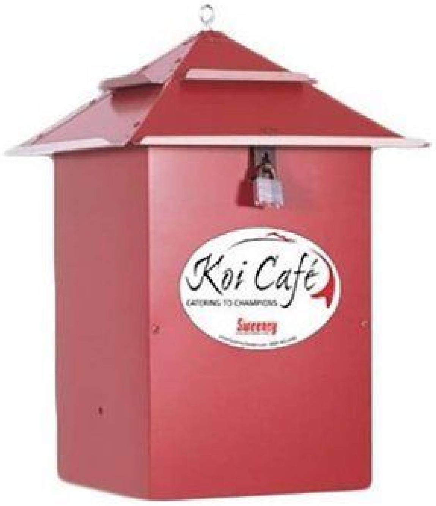
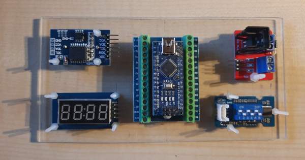
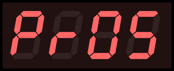
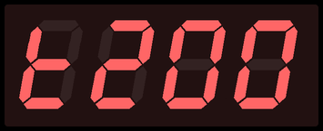
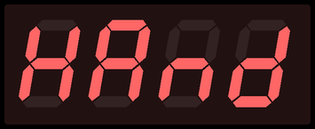
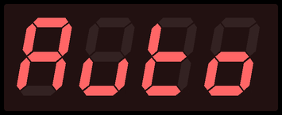
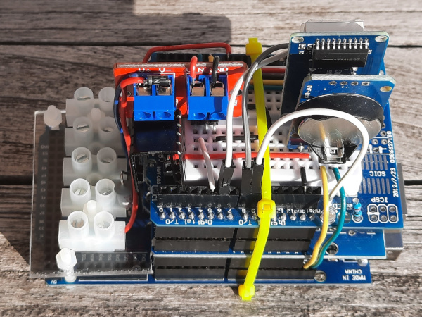
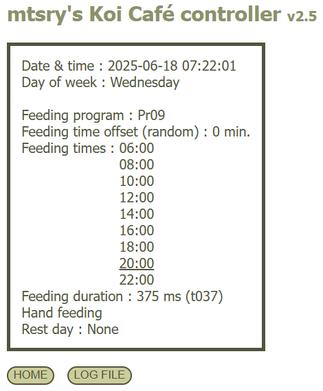

Koi Café controller 1.0
Als alternatief voor de bijgeleverde timer kan een Arduino Nano als timer voor het Koi Café voederapparaat gebruikt worden. Door de programmatie kunnen een aantal voederschema's vooraf gedefinieerd worden en kan de tijdsduur van elke voederbeurt op een eenvoudige manier gewijzigd worden. En met de nodige uitbreidingen kan zelfs het relais vervangen worden door een MOSFET als schakelelement.

Componenten
- Arduino Nano op breakout shield met schroefconnectors
- DS3231 Real Time Clock
- Grove 6-Position DIP Switch
- TM1637 7-Segment display
- IRF520 MOSFET Switch module

(13 augustus 2022)
Voederprogramma

| Programma | DIP Switch |
Voedertijden |
| Pr00 Pr01 Pr02 Pr03 Pr04 Pr05 Pr06 Pr07 |
000 001 010 011 100 101 110 111 |
09:00 17:00 08:00 13:00 18:00 07:00 11:00 15:00 19:00 07:00 10:00 13:00 16:00 19:00 06:30 09:15 12:00 14:45 17:30 20:15 06:00 08:30 11:00 13:30 16:00 19:00 21:30 06:00 08:15 10:30 12:45 15:00 17:15 19:30 21:45 06:00 08:00 10:00 12:00 14:00 16:00 18:00 20:00 22:00 |
Duurtijd voederbeurt

| Instelling | DIP Switch |
Duurtijd |
| t100 t125 t150 t200 |
00 01 10 11 |
1000 1250 1500 2000 |
Alle voerbeurten automatisch of ook enkele voederbeurten handmatig
Handmatig wil zeggen dat de onderstreepte voederbeurten in de tabel met voedertijden niet worden uitgevoerd.


| Instelling | DIP Switch |
| HAnd Auto |
0 1 |

Koi Café controller 2.0
De overstap naar een Arduino Mega als timer voor het Koi Café voederapparaat is ingegeven door het verbruik van de Arduino Nano met zijn uitbreidingen. De bijgeleverde batterij in combinatie met het zonnepaneel dat zijn ding niet meer doet, hield het maar enkele dagen uit. Een mogelijke oplossing is gebruik te maken van een netstekkervoeding en een kabel doorheen de paal naar het Koi Café voederapparaat te trekken. Dit geeft dan weer extra mogelijkheden om de controller vanop afstand aan te sturen wanneer deze mee in het computernetwerk wordt geschakeld via een Ethernet shield.
Componenten
- Arduino Mega
- W5100 Ethernet shield
- Prototype shield with mini breadboard
- DS3231 Real Time Clock
- TM1637 7-Segment display
- IRF520 MOSFET Switch module

(4 september 2022)
Instructies
In het geval van de Arduino Mega is de URL het LAN IP adres. Door gebruik te maken van de optionele query string (volgend op het vraagteken) kunnen instructies doorgegeven worden aan de Ethernet client. Enkelvoudige instructies maken enkel gebruik van de ‘parameter’ syntax, en met de ‘parameter=waarde’ syntax kunnen waarden aan variabelen toegekend worden.
192.168.1.128/?HAND_FEEDING
192.168.1.128/?FEEDING_DURATION=1800
De tabel geeft een overzicht van de instructies met betrekking tot het voederen.
|
FEEDING_PROGRAM=<value> FEEDING_TIME_OFFSET=<value> FEEDING_DURATION=<value> HAND_FEEDING AUTOMATIC_FEEDING PROGRAM_START_TIME=<value> PROGRAM_END_TIME=<value> PROGRAM_NUMBER_FEEDINGS=<value> TEST_FEEDING=<value> |
Met de FEEDING_PROGRAM instructie kan gekozen worden tussen de 8 voorgeprogrammeerde voederschema's genummerd van 0 tot en met 7. Voederprogramma 8 is vrij instelbaar d.w.z. men kan het tijdstip van de eerste voederbeurt ingeven met PROGRAM_START_TIME, het tijdstip van de laatste voederbeurt met PROGRAM_END_TIME en het aantal voederbeurten met PROGRAM_NUMBER_FEEDINGS. De nodige voederbeurten worden vervolgens gelijkmatig verdeeld over de totale periode.
Om te vermijden dat de koi de 'gewoonte' aanleren om op vaste tijdstippen eten te krijgen, is er de mogelijkheid om een random variatie van bv. maximaal 15 minuten (zowel vroeger als later) op te leggen met de FEEDING_TIME_OFFSET instructie. Deze random variaties worden elke dag om middernacht bepaald en wijzigen niet gedurende de dag opdat men de voedermomenten kan opvolgen.
Met TEST_FEEDING kan het tijdstip opgelegd worden van een test voederbeurt waarna het voorgaande voederprogramma wordt verdergezet.
De actuele instellingen van de Koi Café controller zijn voortdurend beschikbaar via de web server.
